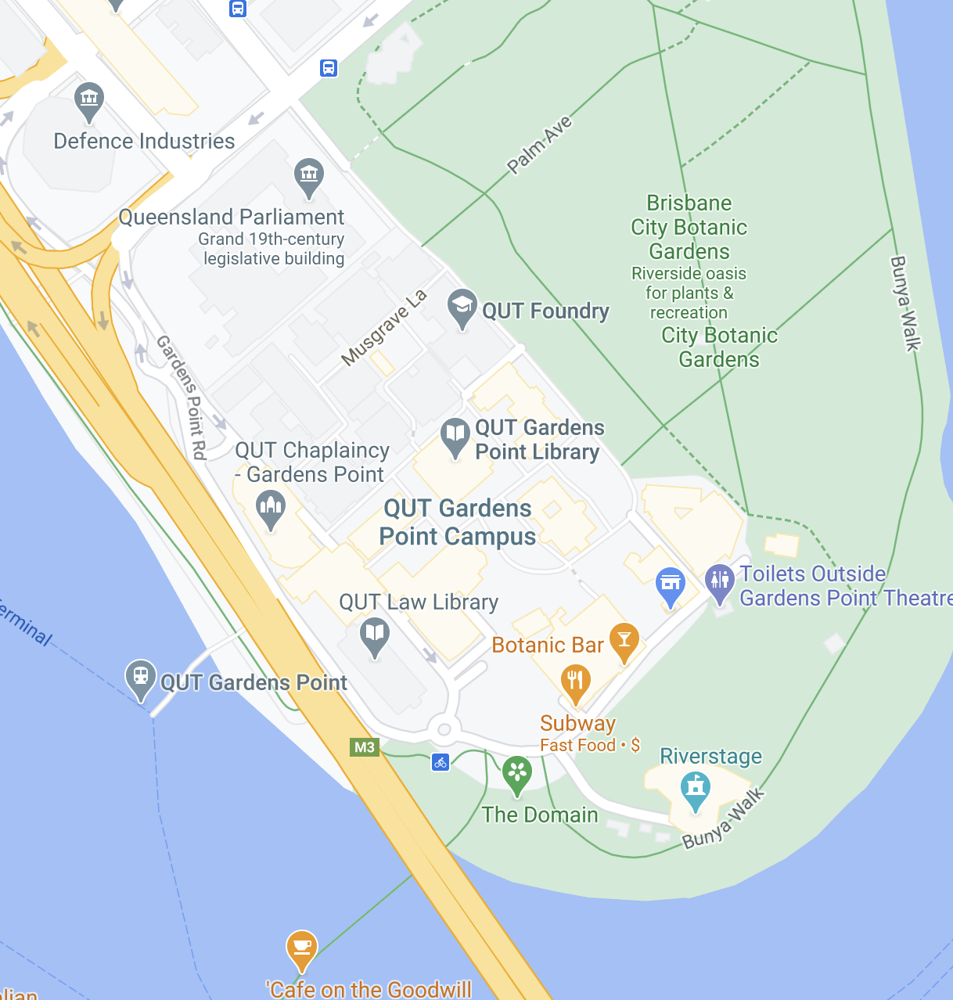

Hi, Nice to meet you! My name is Natalie Yvonne Smith, and I am a current Design and IT student specialising in Interaction Design and Computer Science.
I enjoy viewing the world from a different lens. Thus, I aspire to become someone who can showcase this in any way possible. I enjoy doing various projects, specifically graphic design, photography, web design, art and music.
Photographed by Natalie Smith (Smith, 2020)
And just a little bit of random TMI...
Favourite quote
Yes, I know. While it is one of those cliche quotes bogans get on their wrist, I do feel like it is a quote we should all live by. As the one and only Robin Williams spoke in the brilliant movie the Dead Poets Society:
"Carpe Diem. Seize the day, boys [and girls]. Make your lives extraordinary!" (Denham, 2014)
~ Robin Williams
Favourite movie
In all seriousness, I feel like it is impossible to have only one favourite movie. Nonetheless, I would have to say if I was to pick one lucky winner, it would be Spirited Away. To describe it as a masterpiece for the senses is an understatement. Not only is the artistry amazing, but the music is just beautiful.
Spirited Away Gif Sourced from Giphy (Giphy, 2020)
Contact Details
Interested in my work? Please don't hesitate to contact me to discuss commissions or just to say hello!
Currently, I am located at my Brisbane City office. Come by for a chat! My visiting hours are as followed.
Monday-Friday: 10:00AM-4:00PM
Saturday-Sunday: CLOSED

2 George Street Brisbane QLD 4000 Australia
Map sourced from Google Maps
References
My Sources
Note* all sources that were referenced (Smith, 2020) throughout are my own work
Secondary Sources
GIPHY. (2020). Happy Studio Ghibli Gif. Giphy. Retrieved September 6, 2020 from:https://media3.giphy.com/ media/yrBwdH8CD7K5q/giphy.gif?cid=ecf05e 479h6f87rwm5ygd2r6kvzuwv3380m9rjeck136l rq6&rid=giphy.gif
Denham, J. (2014). Robin Williams' best Dead Poets Society quotes: 'Carpe diem. Seize the day, boys. Make your lives extraordinary'. Retrieved September 6, 2020m from:https://www.independent.co.uk/arts-entertainment/films /news/robin-williams-best-dead-poets-society-quotes-carpe -hear-it-carpe-carpe-diem-seize-the-day-boys-9663800.html
ICONS
We're retrieved from Iconsdb, and are under a Public Domain Dedication.